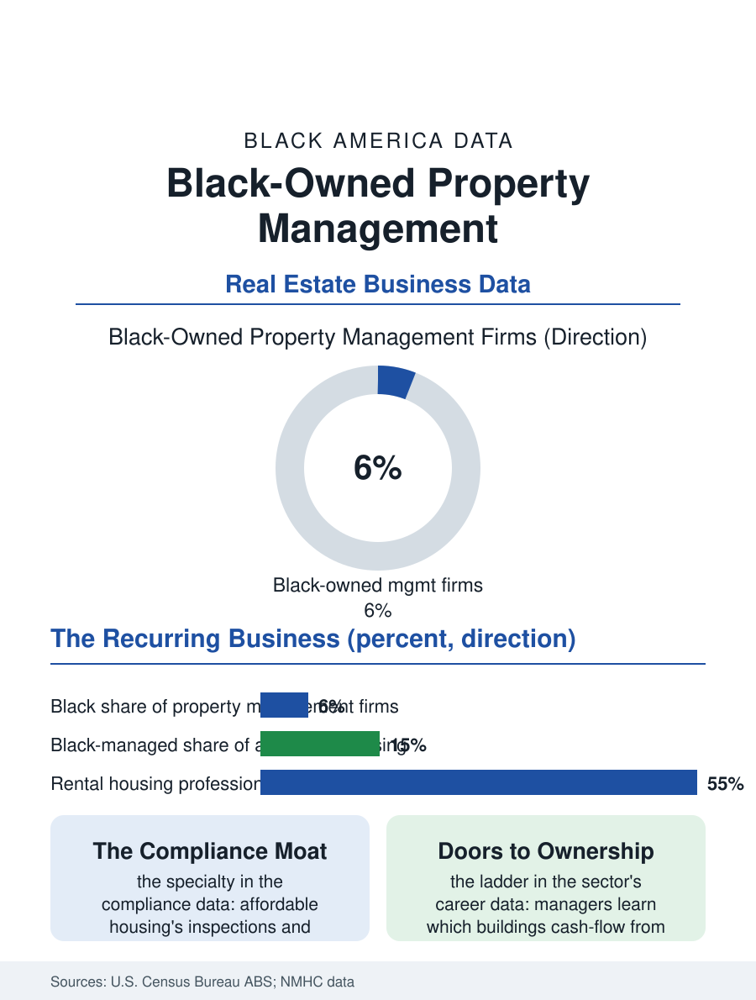

Black Business
The Leasing Office: Black-Owned Property Management
Property management is real estate's subscription business, and Black firms hold the affordable housing specialty where compliance is the moat. The management file.

Behind every apartment building and rented house in this atlas stands a property manager, collecting, repairing, leasing, and answering the phone at the hour the pipe bursts. Property management is one of the least glamorous and most durable businesses in real estate, and Black-owned management companies hold a growing share of it, managing the affordable housing stock, the small landlords' portfolios, and increasingly the institutional assets in Black neighborhoods. This article reads the management file.
Managing Other People's Buildings
The business model's attraction is its recurrence: management fees run as a percentage of collected rent, month after month, through booms and busts, a subscription business built before the word existed. The Census business data place Black-owned firms throughout the sector, with a distinctive center of gravity in the affordable and subsidized segments, where the compliance stack, the inspections, the income certifications, the agency relationships, constitutes a specialty the generalist firms avoid and the Black firms rooted in those housing markets have mastered into a defensible niche. The small-landlord segment is the second pillar: the duplexes and fourplexes of the Black community's own landlord class, the mom-and-pop owners of the housing file, need managers as they age and disperse, and the Black management firm's pitch to them is written in the community's trust language, the manager who knows the tenants' churches and the owners' grandchildren. Scale changes the business's nature at each tier: the scattered-site single-family management that the investor era created, thousands of doors across a metro, is a logistics and software business, while the multifamily tier is a staffing business, the on-site teams whose quality is the product tenants actually experience.
The Tenant Side of the Desk
The manager sits at the exact point where the housing system's promises meet its plumbing, and the file records the position's tensions without flinching. The manager enforces the lease for the owner and fields the maintenance request from the tenant, collects the rent that the cost burden file shows consuming half the tenant's income, and executes the eviction filing that the housing data count, roles that make the Black management firm a complicated community institution: an enforcer whose legitimacy depends on being visibly fairer than the absentee alternative. The best firms in the sector's literature build their brands on exactly that margin: maintenance response times published and met, payment plans before filings, renewal offers that price retention against turnover's true cost, practices that are simultaneously the ethical position and, on the spreadsheet, the profitable one, since a stable tenancy is worth more than a churned one in every honest accounting. The regulatory environment, source-of-income protections, habitability enforcement, and the eviction diversion programs of the recent years, has professionalized the tenant side of the desk across the industry, converting what was a relationship business into a compliance discipline whose costs favor the firms with systems, one more consolidation pressure in a sector where the small firm's survival depends on niching where the systems do not reach.
The Path From Doors to Ownership
Management is the real estate industry's classic apprenticeship for ownership, and the file follows the ladder the sector's veterans describe: the manager learns the buildings' true economics from the inside, which buildings cash-flow, which blocks are turning, which owners are tired, and converts the knowledge, deal by deal, into a portfolio of her own, often beginning with the management clients' castoffs she alone knows are sound. Black managers execute this ladder against the capital file's headwinds, and the industry's response, the management-to-ownership funds and the syndications assembling Black investor capital behind experienced Black operators, is one of the business pages' more concrete recent developments. The affordable housing development pipeline draws on the same bench: the manager who has run tax-credit properties for a decade is the developer's natural partner and, increasingly, the developer. The management file closes at the leasing office at the first of the month, the line at the counter, the work orders on the board, in the least poetic room in real estate and one of the most consequential in this atlas, since the quality of Black America's housing is decided less often in the developer's rendering than in whether the manager answers, repairs, and renews. The firms that do it well, quietly and for decades, are infrastructure. The file counts them accordingly.
More in Black Business
Black-Owned Businesses: Counts, Receipts, and the Representation Gap
About 161,000 Black-owned employer firms and three million solo ventures: how the Census Bureau counts Black business ownership, where firms concentrate, and the gap between population share and business share.
Black Median Net Worth: The Wealth Gap in Federal Reserve Data
The Federal Reserve puts Black median family net worth at $44,900, against $285,000 for White families — about 16 cents on the dollar. The widest gap in economic data.
Black Buying Power: The $1.8 Trillion Consumer Economy
Black buying power is estimated at about $1.8 trillion — larger than the economy of most nations. What the figure measures, who produces it, and what it buys.
Source: U.S. Census Bureau, Annual Business Survey (NAICS 53131); National Multifamily Housing Council data; property management industry reports.